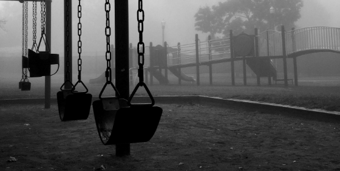

Bayangkan kamu sendirian di kamar. Lampu redup, headphone terpasang, dan tiba-tiba kamu dengar bisikan, "Jaka... Jaka..." dari suatu tempat. Kamu langsung menoleh ke sekeliling. Tidak ada siapa-siapa. Beberapa detik kemudian, terdengar suara langkah kaki dari luar kamar. Tapi di layar, tidak ada satu pun hal aneh yang terjadi.

Industri game horor terus berkembang dengan menghadirkan pengalaman bermain yang tidak hanya mengandalkan kejutan visual, tetapi juga cerita yang kuat dan memiliki nilai budaya. Dalam beberapa tahun terakhir, game horor berbasis budaya lokal mulai mendapatkan perhatian karena mampu menghadirkan suasana yang berbeda dibandingkan game horor global yang banyak menggunakan mitologi Barat.

Perkembangan teknologi digital membuka peluang baru untuk memperkenalkan budaya Indonesia kepada generasi muda. Banyak anak muda saat ini lebih mengenal karakter horor dari budaya asing dibandingkan cerita rakyat daerah sendiri.